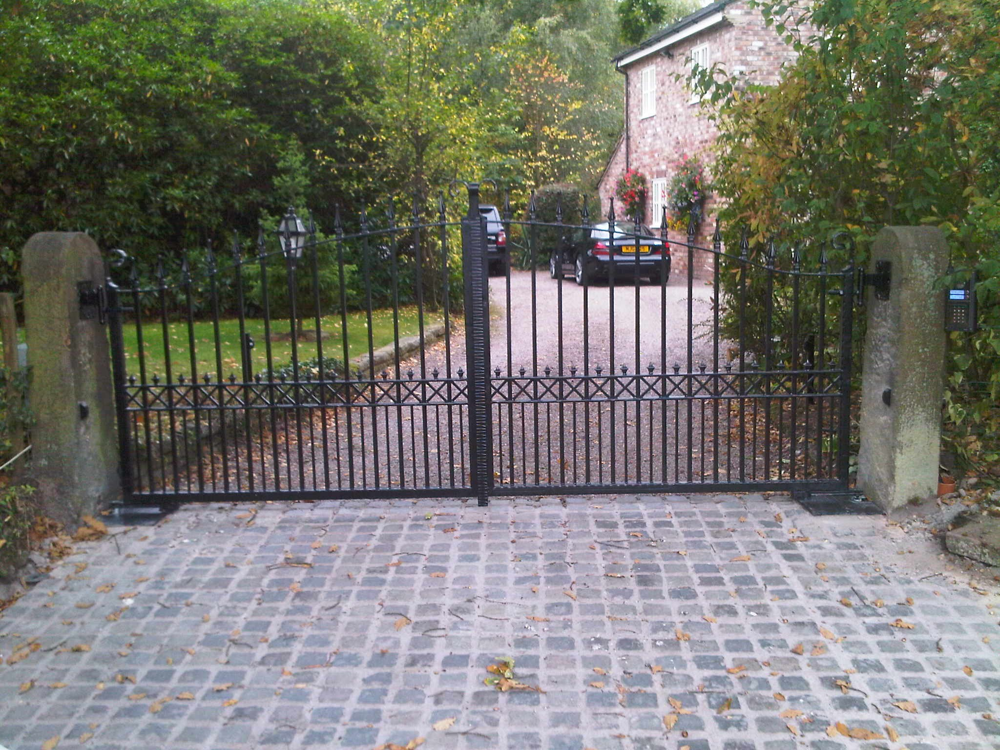
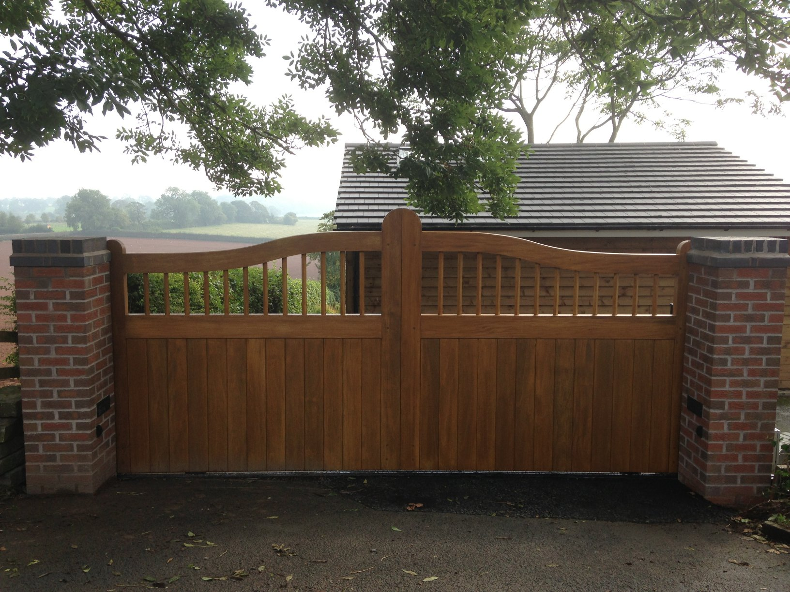
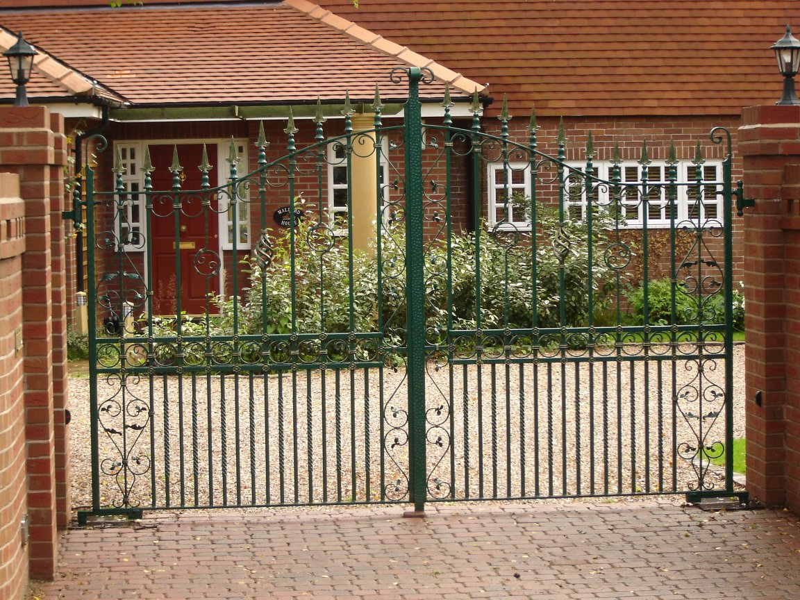
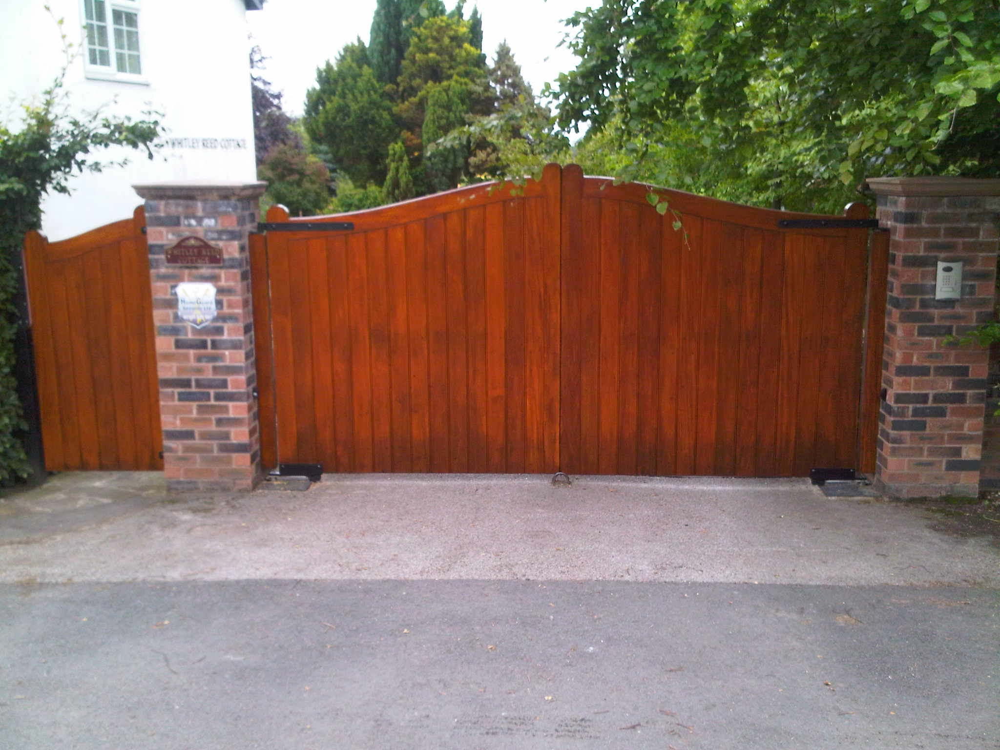
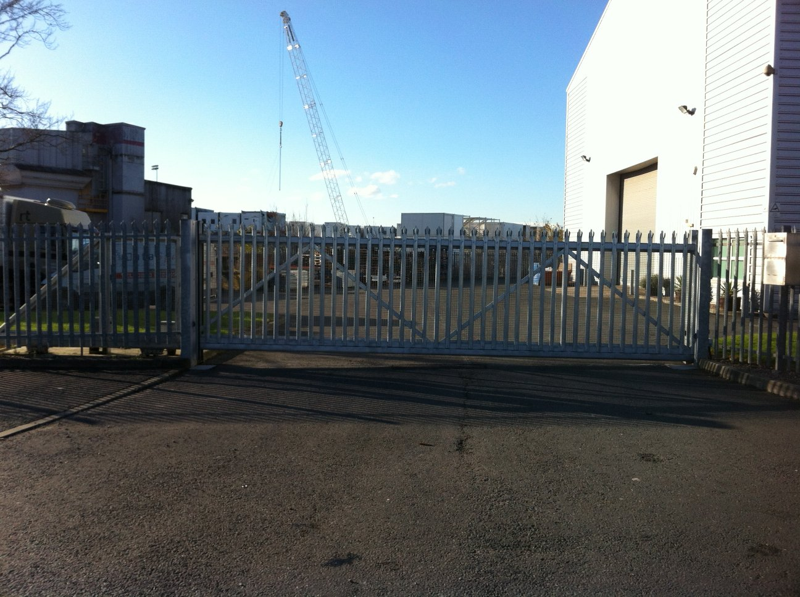

Safety is not an optional extra.
Made to measure gates and automation for homes and businesses. Every job starts with a safety survey.

Six things we check before any gate moves.
Our survey looks at the gate, the drive and the people who use it: young children, older visitors, pets. Then we choose the motors and safety devices to remove each risk.
Gates fitted before the rules?
Most automated gates installed before the regulations had no safety at all. Many of the risks can be reduced by adding modern devices that work with your existing motors.
- Safety edgesSoft edges that stop or reverse the gate at the slightest touch.
- Safety beamsThe gate knows when someone is in its way.
- Automation and garage doorsMotors and controls chosen to suit the gate and how it is used.
- Intercoms and fobsLet visitors in from the house, or open from the car.

Safe, and good looking with it.
Every gate is designed to the highest specification, in a size and design to suit you.



Heavy duty, for heavy use.
For commercial sites we recommend stronger materials and heavy duty motors, because the gates are used all day. Gates and barriers, surveyed and fitted the same careful way.
"The guys at Platinum Automated Entries were a genuine pleasure to work with from start to finish."
"We are delighted with the new gates manufactured and installed by Platinum Automated Entries."